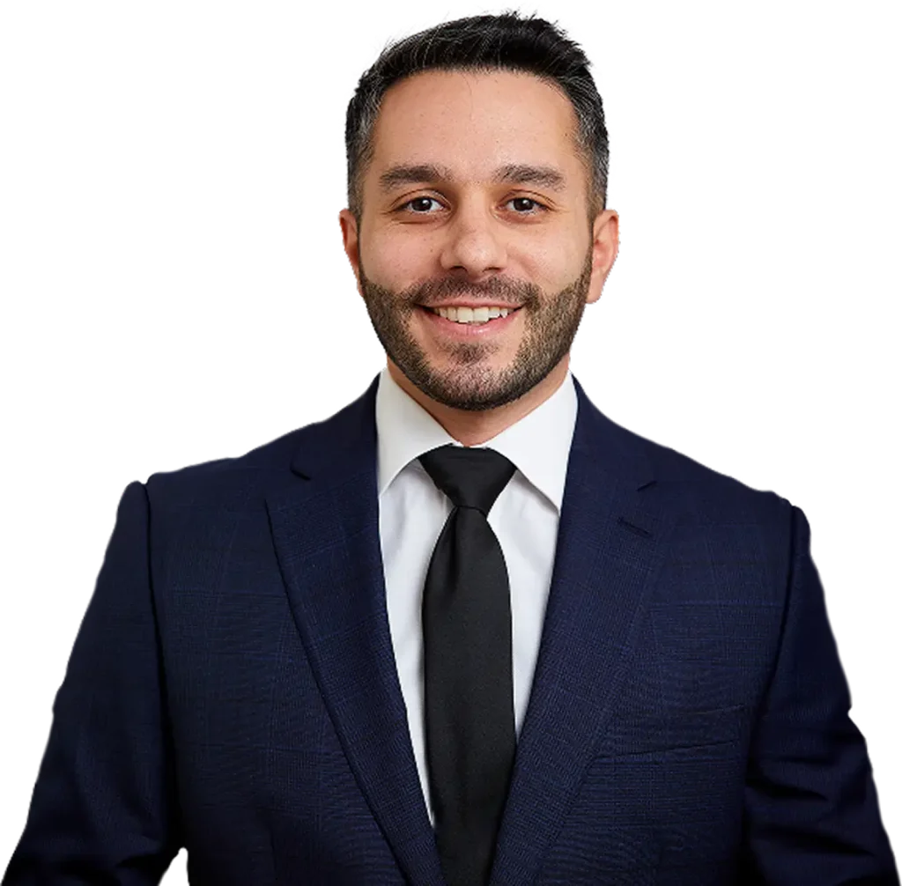

Hurt in a West Covina Car Accident?
Don't take the insurance company's first offer. Josh Nozar fights for the full value of your case — and you pay nothing unless he wins.
Serving West Covina and the eastern San Gabriel Valley.
The Nozar Difference
You've Seen the Billboards. Here's the Difference.
The mega-firms run on volume — thousands of open files and settle-fast math. Josh built his firm to be the opposite.
The billboard firm
- Your file is one of thousands
- A case manager returns your calls
- Volume math: settle fast, move on
- You may never meet your attorney
Nozar Law
- Selective caseload — limited on purpose
- Josh answers — clients say so in review after review
- Every case prepared like it's going to trial
- One attorney, start to finish: Joshua Nozar
Prior results do not guarantee a similar outcome. Every case is unique, and results depend on the facts and applicable law. The $6.8M result was obtained in construction-defect litigation.
What Happens When You Call
Free, Fast, and on Your Side Today
Call 24/7 or send the 60-second form. Your story gets heard, your questions get answered, and you learn where you stand. Free, no obligation.
He deals with every adjuster call, gathers the evidence, and helps you get the medical care you need — so you can focus on healing.
He negotiates for the maximum — and litigates if they won't pay it. You owe no attorney fee unless he recovers for you.
Why Josh
A Lawyer Who Actually Answers His Phone

Joshua Nozar built his firm on a simple rule: take fewer cases and win them properly. "We are not a volume-based firm" isn't a slogan — it's how the office runs. Josh limits his caseload so every client gets his personal attention, and his clients say the same thing in review after review: he picks up the phone.
A graduate of USC's Marshall School of Business and Loyola Law School, Josh has recovered millions for his clients in settlements, arbitrations, and Superior Court trials — and insurance carriers know he prepares every case like it's headed to a courtroom.
Nozar Law, APC · 9171 Wilshire Blvd, Suite 500, Beverly Hills, CA 90210 · Free consult 24/7: (213) 934-8686
Client Reviews
What Clients Say
"Nozar Law represented me in my car accident case. He was very attentive and called me often with updates about my case. He would listen to my needs and make sure that I was getting the best care and the best doctors possible."
"Outstanding attorney! He always picked up the phone and was quick to get back. I was always in the loop and he was very thorough… He will deliver results. He puts clients first."
"Mr. Nozar is an excellent Personal Injury lawyer. He cares for his clients and fights for them relentlessly. I 100% recommend him and his firm."
Straight Answers
Questions Everyone Asks
What does it cost to hire Nozar Law?
Nothing up front — ever. The consultation is free, and you owe no attorney fee unless Josh recovers money for you. No recovery, no attorney fee. (Court costs and case expenses are explained clearly in your agreement before you sign anything.)
The insurance company already offered me money. Should I take it?
Not before a free case review. First offers are low by design — adjusters are trained to settle before you know what your claim is worth. Signing usually ends your claim permanently, even if your injuries get worse. Let Josh look first; it costs you nothing.
How much is my case worth?
It depends on your medical bills, lost wages, future treatment, and what the crash has taken from your life. Insurers hope you'll guess low. A free case review gives you a realistic range before you accept anything.
How long do I have to file in California?
In California you generally have two years from the crash to file — and claims against government entities (a city bus, a Metro vehicle, a dangerous road) require a formal claim within just six months. Evidence disappears far sooner: camera footage gets erased and witnesses move. The sooner Josh starts, the stronger your case.
Will I have to go to court?
Most cases settle without a trial. But insurance companies track which lawyers actually litigate — and pay more to avoid facing them. Josh prepares every case as if it's going to trial; that preparation is exactly what makes a full-value settlement possible.
What if I was partly at fault?
California follows "pure comparative negligence" — you can recover compensation even if you share part of the blame; your recovery is simply reduced by your percentage of fault. Don't accept the insurer's version of events. Get a free review first.
Talk to Us Today — Free
Free consultation 24/7. No fee unless we win. Se habla español.